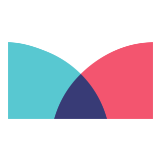

Tu guion ya existe. Hoy le buscas voz, música y un lugar donde sonar, y armas tu primera mezcla.
"Una historia también se escucha. Antes de buscar sonidos, decide qué tiene que sentir quien escucha."
Hoy editas tu podcast en Canva, con tu cuenta personal. La voz la haces con WevoLabs, sin cuenta; si no carga, con el texto a voz de Canva. Tu docente te dice cómo trabaja tu grupo; si estudias solo, sigue la ruta de WevoLabs.
Manifiesto: No copio caras ni voces reales. Hoy eliges voces: ninguna imita a alguien que existe.

A · Mixkit o Pixabay